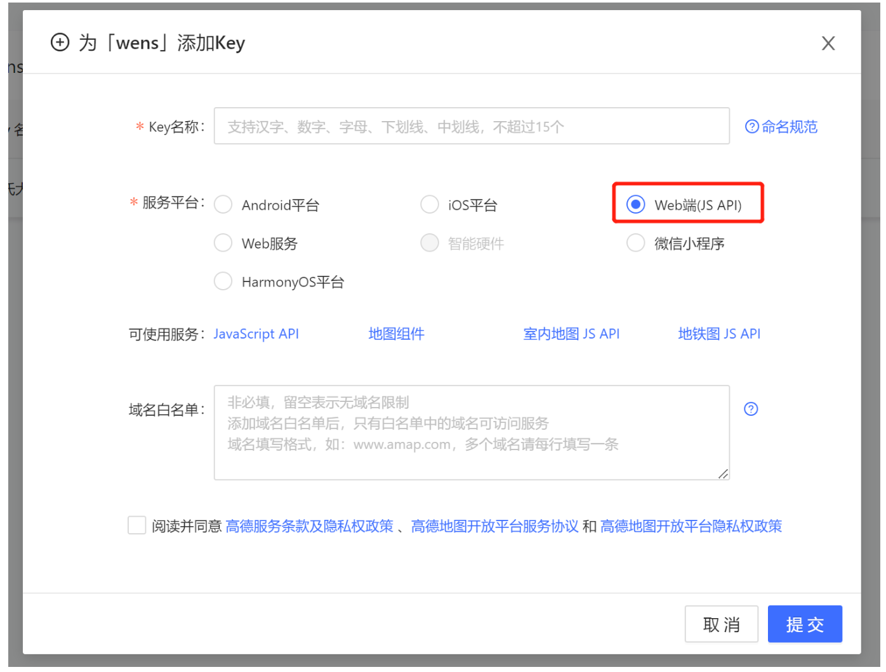

高德地图-Web
Feb 8, 2023
官网
1. 准备
- 登录后，在进入「应用管理」 页面「创建新应用」
- 为应用添加 Key，「服务平台」一项请选择 Web 端 ( JSAPI ) ，设置域名白名单，可选（建议设置域名白名单）。

提交后会有一个key和安全密钥
2. Vue
安装@amap/amap-jsapi-loader
1
npm install @amap/amap-jsapi-loader
在main.js中配置安全密钥
1
2
3
4//配置安全密钥
window._AMapSecurityConfig = {
securityJsCode: '47d307eb938d663d5040fb9e2c867a4e' //* 安全密钥
}使用-demo
1
2
3
4
5
6
7
8
9
10
11
12
13
14
15
16
17
18
19
20
21
22
23
24
25
26
27
28
29
30
31
32
33
34
35
36
37
38
39
40
41
42
43
44
45
46
47
48
49
50
51
52
53
54
55
56
57
58
59
60
61
62
63
64
65
66
67
68
69
70
71
72
73
74
75
76
77
78
79
80
81
82
83
84
85
86
87
88
89
90
91
92
93
94
95
96
97
98
99
100
101
102
103
104
105
106
107
108
109
110
111
112
113
114
115
116
117
118
119
120
121
122
123
124
125
126
127
128
129
130
131
132
133
134
135
136
137
138
139
140
141
142
143
144
145
146
147
148
149
150
151
152
153
154
155
156
157
158
159
160<template>
<div class="content">
<!-- 用来显示地图 -->
<!-- 可以不写宽度，但一定要有高度 -->
<div id="Map" style="height: 1080px"></div>
</div>
</template>
<script>
//引入高德地图
import AMapLoader from '@amap/amap-jsapi-loader'
import { lngLats } from "../../api/navigator.js"
export default {
name: 'IndexMap',
data() {
return {
map: null, //地图实例,
lnglats:[115.25,39.26],
marker:null,
mapCenter:{},
mapMarker:[],
lnglatData:[]
}
},
props: {
mapData: Array
},
async mounted () {
// 先获取经纬度数据
// 处理获取到的数据
// res = [];
// console.log(this.mapData)
// this.lnglatData = this.mapData
// await this.handleLngLats(this.lnglatData)
// this.initMap()
lngLats({data:""}).then(async (res)=>{
this.lnglatData = res.coordinate
await this.handleLngLats(this.lnglatData)
this.initMap()
})
},
methods: {
initMap() {
AMapLoader.load({
key: "4dec70081c5d9aac3302fea2c286257c", // 申请好的Web端开发者Key，首次调用 load 时必填
//2.0版本太卡了 ，所以使用的1.4.0版本 其插件也有不同 如：ToolBar
version: "1.4.0", // 指定要加载的 JSAPI 的版本，缺省时默认为 1.4.15
resizeEnable: true,
plugins: [
"AMap.ToolBar", //工具条
"AMap.Scale", // 比例尺
"AMap.Geolocation"//定位
], // 需要使用的的插件列表，如比例尺'AMap.Scale'等
}).then( (AMap) => {
// console.log(AMap);
this.map = new AMap.Map("Map", { //设置地图容器id/这里的参数有许多可根据需要添加 点击下面《map地图参数》跳转
mapStyle: 'amap://styles/5ed80c38b0497ad5b3cd1648590002df',
viewMode: "3D", //是否为3D地图模式
pitch:30,// 地图俯仰角度，有效范围 0 度- 83 度
zoom: 12, //初始化地图级别
center: this.mapCenter.position, //初始化地图中心点位置
});
// console.log(this.mapCenter,this.mapMarker)
this.markerAdd(this.mapMarker)
this.centerMarker(this.mapCenter)
}).catch(e => {
// console.log(e);
this.$message.error(e)
})
},
// 给非中心点添加marker
markerAdd(data){
for( var i = 0; i < data.length; i++){
// let position = this.arrLngLat(data[i].lng, data[i].lat)
if( data[i].wens_latitude == "" && data[i].wens_precision =="" ){
continue
}
var markerPoint = new AMap.Marker({
position: data[i].position, // 经纬度
offset: new AMap.Pixel(85, 18), // 标记点偏移量
icon: require('../../assets/images/icon_01.png'), // 添加 Icon 图标 URL（不加icon应该有默认标记）
title: data[i].wens_village,
extData: data[i].id
})
markerPoint.on('click', (e)=>{
let extData = e.target.getExtData()
this.filterCenter(extData)
this.map.clearMap();
this.centerMarker(this.mapCenter)
this.markerAdd(this.mapMarker)
})
this.map.add(markerPoint)
}
},
// 给中心点添加marker
centerMarker(data){
this.map.setZoomAndCenter(12, data.position)//同时设置zoom和中心点
var markerPoint = new AMap.Marker({
position: data.position,
offset: new AMap.Pixel(50, 0),
icon: require('../../assets/images/index_11.png'), // 添加 Icon 实例
});
markerPoint.setLabel({
direction:'top',
offset: new AMap.Pixel(0, 0), //设置文本标注偏移量
content: `<div class='info'>${data.wens_village}</div>`, //设置文本标注内容
});
// markerPoint.on('click', (e)=>{
// console.log(e.target.getPosition())
// })
this.map.add(markerPoint)
},
fomatFloat(num,pos){
return Math.round(num*Math.pow(10, pos))/Math.pow(10, pos);
},
// 将lng，lat组成position
clearNull(data){
const arr = []
for(var i = 0 ; i < data.length ; i++ ){
if(data[i].cflongitude != null && data[i].cflatitude != null){
arr.push(data[i])
}
}
return arr
},
// 处理获取到的数据
handleLngLats(data){
this.mapMarker = []
for(let i = 0; i < data.length; i++){
const arr=[]
arr.push(data[i].wens_latitude, data[i].wens_precision)
data[i].position = arr
if(i===0){
this.mapCenter = data[i]
}else{
this.mapMarker.push(data[i])
}
}
},
// 点击时将点击的点设置成中心点，再将其他点设置成普通点
filterCenter(data){
let arrCenter = this.lnglatData.filter(item => item.id==data )
let arrOther = this.lnglatData.filter(item => item.id!=data )
this.mapCenter = arrCenter[0]
this.mapMarker = arrOther
}
}
}
</script>
<style lang="scss" scoped>
::v-deep .amap-marker-label{
border: 1px solid #70e3fe;
background-color: #0f1f6d63;
color: #70e3fe;
font-size: 20px;
line-height: 60px;
border-radius: 50px ;
padding: 0 60px;
}
</style>